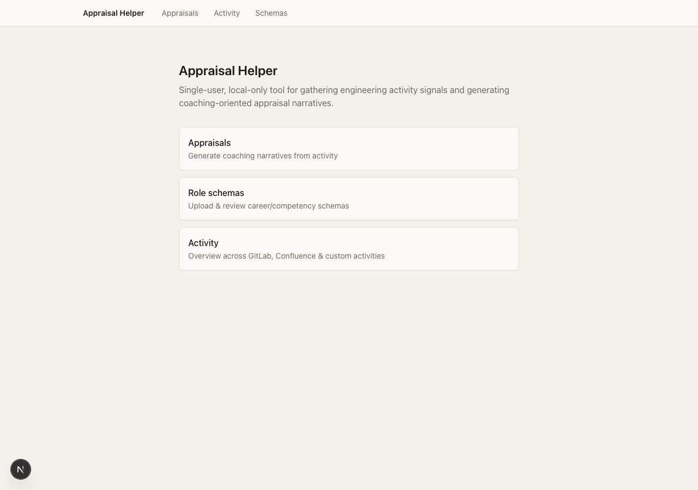
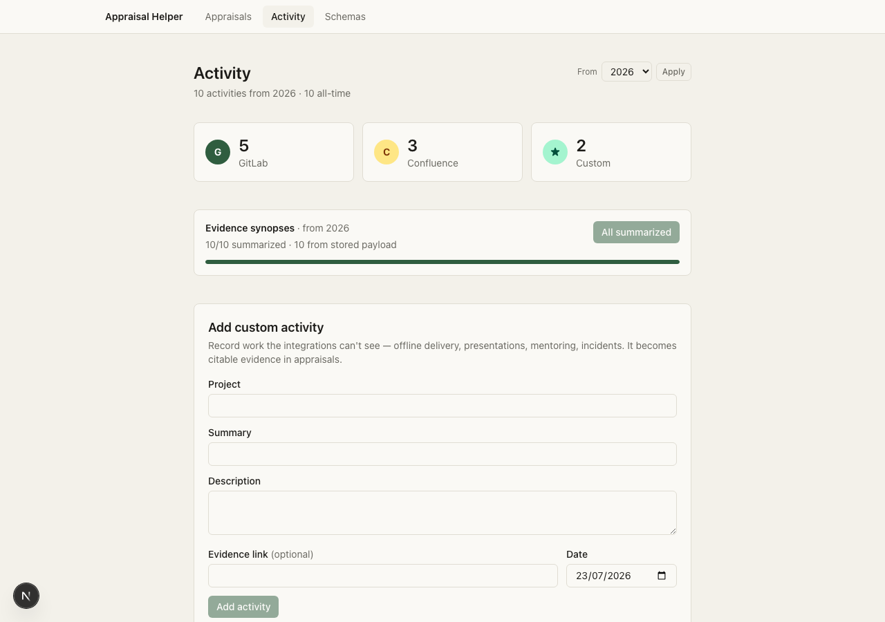
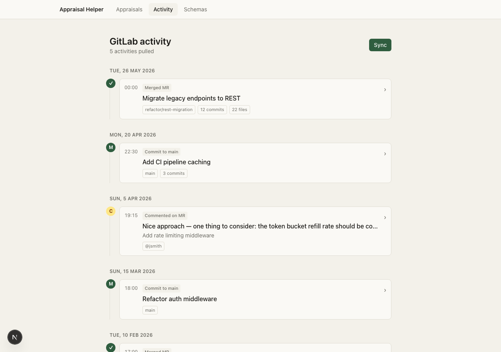
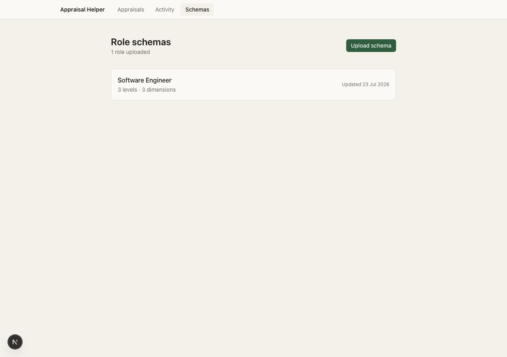
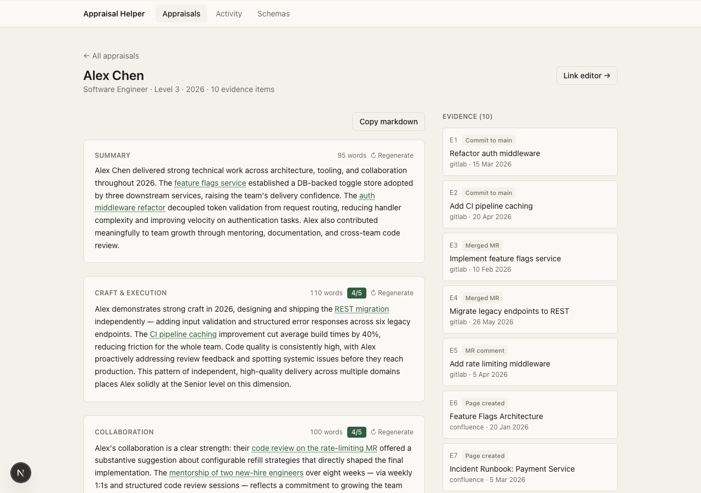
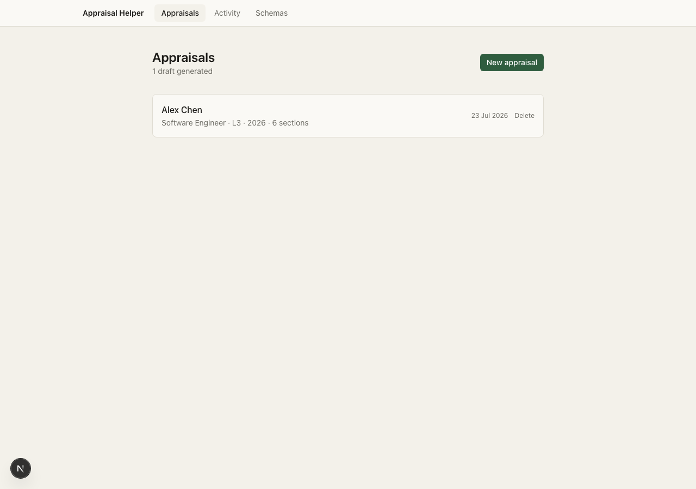
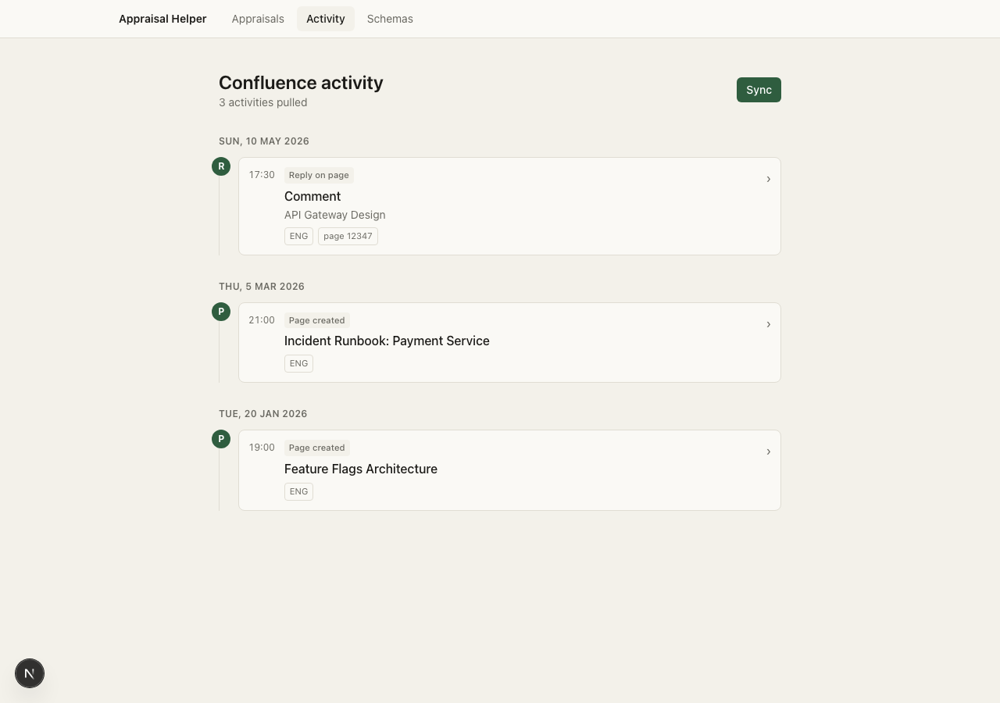

A local, single-user tool that gathers engineering activity signals from GitLab, Confluence & custom sources, then uses Claude to generate coaching-oriented appraisal narratives — grounded in evidence.
The average engineering manager spends 3–5 hours per direct report during appraisal season.

Sync GitLab and Confluence with one click. Add anything the integrations can't see — presentations, mentoring, incidents — as custom activities. Every item becomes citable evidence.


Each activity is condensed into a tight synopsis by a fast AI model — re-fetching the full source material (MR description, page body, commit diff) rather than just the truncated stored payload.
Paste a structured markdown file describing your engineering levels. The tool parses it into a Role → Level → Dimension grid and feeds the current + next level descriptors into each appraisal as the rating rubric.

Generation runs section-by-section via Claude in the terminal. The summary and dimension sections stream in parallel; career focus and next steps wait for the ratings to land.

Cited activity is clustered into evidence groups: [S#] themes
(2+ related items) and [E#] standalone key evidence.
One click prepares a Google-Docs-ready .docx and a portal paste with
matching citation tags.
.docx to Google Docs — each group becomes a heading with a shareable link[S#]/[E#] to its Google Docs anchor

The output is concise and evidence-grounded, not a paper trail. One evidence theme, a few standalone items, and a narrative the panel can read in under 5 minutes. Runs entirely locally — no cloud account, no data leaving your machine.